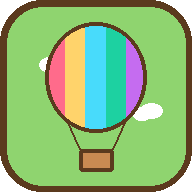
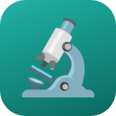

공부
교과 공부와 공부 습관 앱이에요. 하나 골라요!

꼬마 탐험대 공원1~6학년 3D 공부 탐험: 마을 건물에 들어가 보물 상자 문제를 풀고 열기구로 탈출해요
우리 아이 공부 플래너요일별 루틴, 숙제, 부모님 확인 도장까지 한눈에 (아이용 화면은 플래너 안에서 연결해요)
5학년 2학기 수학문제를 끝없이 풀고, 틀리면 원인을 찾아 다시 풀어요 (노트북용, 1단원 어림하기 · 2단원 분수의 곱셈 · 4단원 소수의 곱셈 · 6단원 평균과 가능성)
역사 탐험대외우지 말고 놀면서 만나는 한국사: 이야기 듣기, 나는 누구일까요?, 연표 기차, 인물 도감

과학 실험실예상하고, 화면 속 실험을 직접 해 보고, 용어 카드를 모아요 (노트북용, 5학년 2학기 · 1단원 혼합물의 분리)